전기공사산업기사 (2020-06-06 기출문제)
1과목: 전기응용
1. 회전축에 대한 관성모멘트가 150 kg·m2인 회전체의 플라이휠 효과(GD2)는 몇 kg·m2인가?
- 450
- 600
- 900
- 1000
(정답률: 70%)

2. 전기철도의 교류 급전방식 중 AT 급전방식은 어떤 변압기를 사용하여 급전하는 방식을 말하는가?
- 단권변압기
- 흡상변압기
- 스코트변압기
- 3권선변압기
(정답률: 67%)
3. 오픈루프 제어계와 비교하여 폐루프 제어계를 구성하기 위해 반드시 필요한 장치는?
- 응답속도를 빠르게 하는 장치
- 안정도를 좋게 하는 장치
- 입·출력 비교장치
- 고주파 발생장치
(정답률: 75%)
4. 시속 45km/h의 열차가 곡률 반지름 1000m인 곡선궤도를 주행할 때 고도(cant)는 약 몇 mm 인가? (단, 궤간은 1067 mm 이다.)
- 10
- 13
- 17
- 20
(정답률: 66%)
5. 다음 중 유도가열은 어떤 것을 이용한 것인가?
- 복사열
- 아크열
- 와전류손
- 유전체손
(정답률: 70%)
6. 전동기 운전 시 발생하는 진동 중 전자력적인 원인에 의한 것은?
- 회전자의 정적 및 동적 불균형
- 베어링의 불균형
- 상대기계와의 연결 불량 및 설치 불량
- 회전 시 공극의 변동
(정답률: 63%)
7. 점광원으로부터 원뿔의 밑면까지의 거리가 4m이고, 밑면의 반경이 3m인 원형면의 평균조도가 100 lx라면, 이 점광원의 평균 광도(cd)는?
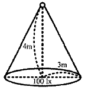
- 225
- 250
- 2250
- 2500
(정답률: 55%)
8. 다음 중 적외선의 기능은?
- 살균작용
- 온열작용
- 발광작용
- 표백작용
(정답률: 59%)
9. 다음 중 전기 화학 당량의 단위는?
- C/g
- g/C
- g/k
- Ω/m
(정답률: 61%)
10. 제너다이오드에 관한 설명 중 틀린 것은?
- 정전압 소자이다.
- 전압 조정기에 사용된다.
- 인가되는 전압의 크기에 따라 전류방향이 달라진다.
- 제너 항복이 발생되면 전압은 거의 일정하게 유지되나 전류는 급격하게 증가한다.
(정답률: 64%)
11. 반도체 소자의 종류 중에서 게이트에 의한 턴온을 이용하지 않는 소자는?
- SSS
- SCR
- GTO
- SCS
(정답률: 51%)
12. 다음 중 열전대의 조합이 아닌 것은?
- 크롬 - 콘스탄탄
- 구리 - 콘스탄탄
- 철 - 콘스탄탄
- 크로멜 – 알루멜
(정답률: 65%)
13. 방전용접 중 불활성 가스용접에 쓰이는 불활성 가스는?
- 아르곤
- 수소
- 산소
- 질소
(정답률: 71%)
14. 금속을 양극으로 하고 음극은 불용성의 탄소 전극을 사용한 다음, 전기 분해하면 금속 표면의 돌기 부분이 다른 표면 부분에 비해 선택적으로 용해되어 평활하게 되는 것은?
- 전주
- 전기 도금
- 전해 정련
- 전해 연마
(정답률: 59%)
15. 기계적 변위를 제어량으로 하는 기기로서 추적용 레이더 등에 응용되는 것은?
- 서보기구
- 자동 조정
- 프로세스 제어
- 프로그램 제어
(정답률: 67%)
16. 전기회로와 열회로의 대응관계로 틀린 것은?
- 전류 - 열류
- 전압 - 열량
- 도전율 - 열전도율
- 정전용량 – 열용량
(정답률: 72%)
17. 가로조명, 도로조명 등에 사용되는 저압 나트륨등의 설명으로 틀린 것은?
- 효율은 높고 연색성은 나쁘다.
- 등황색의 단일 광색이다.
- 냉음극이 설치된 발광관과 외관으로 되어 있다.
- 나트륨의 포화 증기압은 0.004 mmHg 이다.
(정답률: 62%)
18. 광질과 특색이 고휘도이고 배광제어가 용이하며 흑화가 거의 일어나지 않는 램프는?
- 수은램프
- 형광램프
- 크세논램프
- 할로겐램프
(정답률: 72%)
19. 목재의 건조, 베니어판 등의 합판에서의 접착 건조, 약품의 건조 등에 적합한 전기 건조 방식은?
- 아크 건조
- 고주파 건조
- 적외선 건조
- 자외선 건조
(정답률: 52%)
20. 반사율 70%의 완전확산성 종이를 100lx의 조도로 비추었을 때 종이의 휘도(cd/m2)는 약 얼마인가?
- 50
- 45
- 32
- 22
(정답률: 38%)
2과목: 전력공학
21. 주상 변압기의 2차 측 접지는 어느 것에 대한 보호를 목적으로 하는가?
- 1차 측의 단락
- 2차 측의 단락
- 2차 측의 전압강하
- 1차 측과 2차 측의 혼촉
(정답률: 47%)
22. 송전선로에서 역섬락을 방지하는 가장 유효한 방법은?
- 피뢰기를 설치한다.
- 가공지선을 설치한다.
- 소호각을 설치한다.
- 탑각 접지저항을 작게 한다.
(정답률: 54%)
23. 전압이 일정값 이하로 되었을 때 동작하는 것으로서 단락 시 고장 검출용으로도 사용되는 계전기는?
- OVR
- OVGR
- NSR
- UVR
(정답률: 54%)
24. 가공전선을 단도체식으로 하는 것보다 같은 단면적의 복도체식으로 하였을 경우에 대한 내용으로 틀린 것은?
- 전선의 인덕턴스가 감소된다.
- 전선의 정전용량이 감소된다.
- 코로나 발생률이 적어진다.
- 송전용량이 증가한다.
(정답률: 47%)
25. 100MVA의 3상 변압기 2뱅크를 가지고 있는 배전용 2차 측의 배전선에 시설할 차단기 용량(MVA)은? (단, 변압기는 병렬로 운전되며, 각각의 %Z는 20%이고, 전원의 임피던스는 무시한다.)
- 1000
- 2000
- 3000
- 4000
(정답률: 34%)
26. 발전기나 변압기의 내부고장 검출로 주로 사용되는 계전기는?
- 역상계전기
- 과전압계전기
- 과전류계전기
- 비율차동계전기
(정답률: 56%)
27. 단락전류를 제한하기 위하여 사용되는 것은?
- 한류리액터
- 사이리스터
- 현수애자
- 직렬콘덴서
(정답률: 54%)
28. 연가의 효과로 볼 수 없는 것은?
- 선로 정수의 평형
- 대지 정전용량의 감소
- 통신선의 유도 장해의 감소
- 직렬 공진의 방지
(정답률: 47%)
29. 교류 송전방식과 직류 송전방식을 비교할 때 교류 송전방식의 장점에 해당되는 것은?
- 전압의 승압, 강압 변경이 용이하다.
- 절연계급을 낮출 수 있다.
- 송전효율이 좋다.
- 안정도가 좋다.
(정답률: 55%)
30. 어느 변전설비의 역률을 60%에서 80%로 개선하는데 2800 kVA의 전력용 커패시터가 필요하였다. 이 변전설비의 용량은 몇 kW 인가?
- 4800
- 5000
- 5400
- 5800
(정답률: 40%)
31. 전력계통의 경부하시나 또는 다른 발전소의 발전전력에 여유가 있을 때, 이 잉여전력을 이용하여 전동기로 펌프를 돌려서 물을 상부의 저수지에 저장하였다가 필요에 따라 이 물을 이용해서 발전하는 발전소는?
- 조력발전소
- 양수식발전소
- 유역변경식발전소
- 수로식발전소
(정답률: 53%)
32. 반한시성 과전류계전기의 전류-시간 특성에 대한 설명으로 옳은 것은?
- 계전기 동작시간은 전류의 크기와 비례한다.
- 계전기 동작시간은 전류의 크기와 관계없이 일정하다.
- 계전기 동작시간은 전류의 크기와 반비례한다.
- 계전기 동작시간은 전류의 크기와 제곱에 비례한다.
(정답률: 46%)
33. 교류 단상 3선식 배전방식을 교류 단상 2선식에 비교하면?
- 전압강하가 크고, 효율이 낮다.
- 전압강하가 작고, 효율이 낮다.
- 전압강하가 작고, 효율이 높다.
- 전압강하가 크고, 효율이 높다.
(정답률: 50%)
34. 지상부하를 가진 3상 3선식 배전선로 또는 단거리 송전선로에서 선간 전압강하를 나타낸 식은? (단, I, R, X, θ는 각각 수전단 전류, 선로저항, 리액턴스 및 수전단 전류의 위상각이다.)
- I(Rcosθ + Xsinθ)
- 2I(Rcosθ + Xsinθ)
- √3I(Rcosθ + Xsinθ)
- 3I(Rcosθ + Xsinθ)
(정답률: 61%)
35. 배전선로의 전압을 √3배로 증가시키고 동일한 전력 손실률로 송전할 경우 송전전력을 몇 배로 증가되는가?
- √3
- 3/2
- 3
- 2√3
(정답률: 50%)
36. 반동수차의 일종으로 주요부분은 러너, 안내날개, 스피드링 및 흡출관 등으로 되어 있으며 50~500m 정도의 중낙차 발전소에 사용되는 수차는?
- 카플란수차
- 프란시스수차
- 펠텐수차
- 튜블러수차
(정답률: 49%)
37. 단성 2선식 교류 배전선로가 있다. 전선의 1가닥 저항이 0.15Ω이고, 리액턴스는 0.25Ω이다. 부하는 순저항부하이고, 100V, 3kW이다. 급전점의 전압(V)은 약 얼마인가?
- 1⑤
- 110
- 115
- 124
(정답률: 35%)
38. 열의 일당량에 해당하는 단위는?
- kcal/kg
- kg/cm3
- kcal/cm3
- kg·m/kcal
(정답률: 39%)
39. 페란티현상이 발생하는 원인은?
- 선로의 과도한 저항
- 선로의 정전용량
- 선로의 인덕턴스
- 선로의 급격한 전압강하
(정답률: 53%)
40. 다음 중 송·배전선로의 진동 방지대책에 사용되지 않는 기구는?
- 댐퍼
- 조임쇠
- 클램프
- 아머 로드
(정답률: 41%)
3과목: 전기기기
41. 동기기의 과도 안정도를 증가시키는 방법이 아닌 것은?
- 속응 여자방식을 채용한다.
- 동기 탈조계전기를 사용한다.
- 동기화 리액턴스를 작게 한다.
- 회전자의 플라이휠 효과를 작게 한다.
(정답률: 46%)
42. 8극, 유도기전력 100V, 전기자전류 200A인 직류발전기의 전기자권선을 증권에서 파권으로 변경했을 경우의 유도기전력과 전기자전류는?
- 100V, 200A
- 200V, 100A
- 400V, 50A
- 800V, 25A
(정답률: 40%)
43. 3상 동기기의 제동권선을 사용하는 주 목적은?
- 출력이 증가한다.
- 효율이 증가한다.
- 역률을 개선한다.
- 난조를 방지한다.
(정답률: 54%)
44. 동기발전기의 단자 부근에서 단락이 발생되었을 때 단락전류에 대한 설명으로 옳은 것은?
- 서서히 증가한다.
- 발전기는 즉시 정지한다.
- 일정한 큰 전류가 흐른다.
- 처음은 큰 전류가 흐르나 점차 감소한다.
(정답률: 47%)
45. 전기자저항과 계자저항이 각각 0.8Ω인 직류 직권전동기가 회전수 200rpm, 전기자전류 30A 일 때 역기전력은 300V 이다. 이 전동기의 단자전압을 500V로 사용한다면 전기자전류가 위와 같은 30A로 될 때의 속도(rpm)는? (단, 전기자 반작용, 마찰손, 풍손 및 철손은 무시한다.)
- 200
- 301
- 452
- 500
(정답률: 32%)
46. 수은 정류기에 있어서 정류기의 밸브작용이 상실되는 현상을 무엇이라고 하는가?
- 통호
- 실호
- 역호
- 점호
(정답률: 40%)
47. 직류 분권전동기의 정격전압 220V, 정격전류 1⑤A, 전기자저항 및 계자회로의 저항이 각각 0.1Ω 및 40Ω이다. 기동전류를 정격전류의 150%로 할 때의 기동저항은 약 몇 Ω 인가?
- 0.46
- 0.92
- 1.21
- 1.35
(정답률: 22%)
48. 변압기의 임피던스와트와 임피던스전압을 구하는 시험은?
- 부하시험
- 단락시험
- 무부하시험
- 충격전압시험
(정답률: 43%)
49. 기동 시 정류자의 불꽃으로 라디오의 장해를 주며 단락장치의 고장이 일어나기 쉬운 전동기는?
- 직류 직권전동기
- 단상 직권전동기
- 반발기동형 단상유도전동기
- 셰이딩코일형 단상유도전동기
(정답률: 31%)
50. SCR에 대한 설명으로 옳은 것은?
- 증폭기능을 갖는 단방향성 3단자 소자이다.
- 제어기능을 갖는 양방향성 3단자 소자이다.
- 정류기능을 갖는 단방향성 3단자 소자이다.
- 스위칭기능을 갖는 양방향성 3단자 소자이다.
(정답률: 38%)
51. 어떤 공장에 뒤진 역률 0.8인 부하가 있다. 이 선로에 동기조상기를 병렬로 결선해서 선로의 역률을 0.95로 개선하였다. 개선 후 전력의 변화에 대한 설명으로 틀린 것은?
- 피상전력과 유효전력은 감소한다.
- 피상전력과 무효전력은 감소한다.
- 피상전력은 감소하고 유효전력은 변화가 없다.
- 무효전력은 감소하고 유효전력은 변화가 없다.
(정답률: 33%)
52. 임피던스 강하가 5%인 변압기가 운전 중 단락되었을 때 그 단락전류는 정격전류의 몇 배인가?
- 20
- 25
- 30
- 35
(정답률: 45%)
53. 변압기에서 1차 측의 여자 어드미턴스를 Y0라고 한다. 2차 측으로 환산한 여자 어드미턴스 Y0′을 옳게 표현한 식은? (단, 권수비를 a라고 한다.)
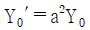
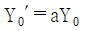
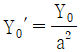
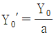
(정답률: 40%)
54. 3상 유도전동기의 전원주파수가 전압의 비가 일정하고 정격속도 이하로 속도를 제어하는 경우 전동기의 출력 P와 주파수 f와의 관계는?
- P ∝ f
- P ∝ 1/f
- P ∝ f2
- P는 f에 무관
(정답률: 52%)
55. 8극, 50kW, 3300V, 60Hz인 3상 권선형 유도전동기의 전부하 슬립이 4%라고 한다. 이 전동기의 슬립링 사이에 0.16Ω의 저항 3개를 Y로 삽입하면 전부하 토크를 발생할 때의 회전수(rpm)는? (단, 2차 각상의 저항은 0.04Ω이고, Y 접속이다.)
- 660
- 720
- 750
- 880
(정답률: 35%)
56. 직류발전기의 병렬운전에서 균압모선을 필요로 하지 않는 것은?
- 분권발전기
- 직권발전기
- 평복권발전기
- 과복권발전기
(정답률: 39%)
57. 3상 유도전동기의 전원측에서 임의의 2선을 바꾸어 접속하여 운전하면?
- 즉각 정지된다.
- 회전방향이 반대가 된다.
- 바꾸지 않았을 때와 동일하다.
- 회전방향은 불변이나 속도가 약간 떨어진다.
(정답률: 51%)
58. 유도전동기의 주파수가 60Hz이고 전부하에서 회전수가 매분 1164회이면 극수는? (단, 슬립은 3% 이다.)
- 4
- 6
- 8
- 10
(정답률: 49%)
59. 전압비 3300/110V, 1차 누설 임피던스 Z1 = 12 + j13Ω, 2차 누설 임피던스 Z2 = 0.015 + j0.013Ω인 변압기가 있다. 1차로 환산된 등가임피던스(Ω)는?
- 22.7 + j25.5
- 24.7 + j25.5
- 25.5 + j22.7
- 25.5 + j24.7
(정답률: 33%)
60. 단상 다이오드 반파정류회로인 경우 정류효율은 약 몇 % 인가? (단, 저항부하인 경우이다.)
- 12.6
- 40.6
- 60.6
- 81.2
(정답률: 41%)
4과목: 회로이론
61. Z = 5√3 + j5(Ω)인 3개의 임피던스를 Y 결선하여 선간전압 250V의 평형 3상 전원에 연결하였다. 이때 소비되는 유효전력은 약 몇 W 인가?
- 3125
- 5413
- 6252
- 7120
(정답률: 36%)
62. 그림과 같은 회로에서 스위치 S를 t=0에서 닫았을 때,
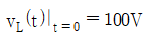
,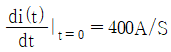
이다. L(H)의 값은?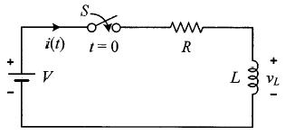
- 0.75
- 0.5
- 0.25
- 0.1
(정답률: 45%)
63. 전류의 대칭분이 I0 = -2+j4(A), I1 = 6-j5(A), I2 = 8+j10(A)일 때 3상전류 중 a상 전류(Ia)의 크기(|Ia|)는 몇 A 인가? (단, I0는 영상분이고, I1은 정상분이고, I2는 역상분이다.)
- 9
- 12
- 15
- 19
(정답률: 34%)
64. V = 50√3-j50(V), I = 15√3+j15(A) 일 때 유효전력 P(W)와 무효전력 Q(var)는 각각 얼마인가?
- P=3000, Q=-1500
- P=1500, Q=-1500√3
- P=750, Q=-750√3
- P=2250, Q=-1500√3
(정답률: 38%)
65. 그림과 같은 회로에서 5Ω에 흐르는 전류 I는 몇 A 인가?
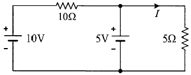
- 1/2
- 2/3
- 1
- 5/3
(정답률: 39%)
66. 어떤 회로에 흐르는 전류가 i(t)=7+14.1sinωt(A)인 경우 실효값은 약 몇 A 인가?
- 11.2
- 12.2
- 13.2
- 14.2
(정답률: 36%)
67. RC 직렬회로의 과도현상에 대한 설명으로 옳은 것은?
- (R×C)의 값이 클수록 과도 전류는 빨리 사라진다.
- (R×C)의 값이 클수록 과도 전류는 천천히 사라진다.
- 과도 전류는 (R×C)의 값에 관계가 없다.
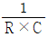
의 값이 클수록 과도 전류는 천천히 사라진다.
(정답률: 51%)
68. 그림과 같은 회로의 전달함수는? (단, 초기조건은 0이다.)
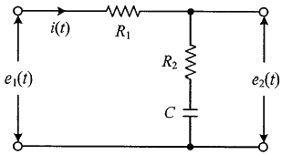
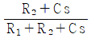
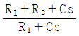
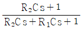
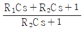
(정답률: 50%)
69. 다음과 같은 회로에서 Va, Vb, Vc(V)를 평형 3상 전압이라 할 때 전압 V0(V)은?
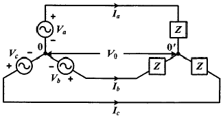
- 0
- V1/3
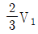
- V1
(정답률: 50%)
70. 회로의 4단자 정수로 틀린 것은?
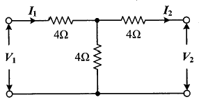
- A=2
- B=12
- C=1/4
- D=6
(정답률: 41%)
71. 용량이 50kVA인 단상 변압기 3대를 △결선하여 3상으로 운전하는 중 1대의 변압기에 고장이 발생하였다. 나머지 2대의 변압기를 이용하여 3상 V결선으로 운전하는 경우 최대 출력은 몇 kVA 인가?
- 30√3
- 50√3
- 100√3
- 200√3
(정답률: 45%)
72. 9Ω과 3Ω인 저항 6개를 그림과 같이 연결하였을 때, a와 b 사이의 합성저항(Ω)은?
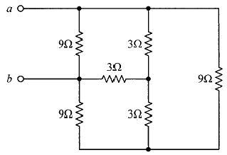
- 9
- 4
- 3
- 2
(정답률: 43%)
73. 푸리에 급수로 표현된 왜평과 f(t)가 반파대칭 및 정현대칭일 때 f(t)에 대한 특징으로 옳은 것은?
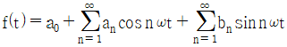
- an의 우수항만 존재한다.
- an의 기수항만 존재한다.
- bn의 우수항만 존재한다.
- bn의 기수항만 존재한다.
(정답률: 40%)
74. 그림과 같은 4단자 회로망에서 출력 측을 개방하니 V1=12V, I1=2A, V2=4V이고, 출력 측을 단락하니 V1=16V, I1=4A, I2=2A 이었다. 4단자 정수 A, B, C, D는 얼마인가?
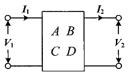
- A=2, B=3, C=8, D=0.5
- A=0.5, B=2, C=3, D=8
- A=8, B=0.5, C=2, D=3
- A=3, B=8, C=0.5, D=2
(정답률: 41%)
75. 그림과 같은 회로에서 L2에 흐르는 전류 I2(A)가 단자전압 V(V)보다 위상이 90° 뒤지기 위한 조건은? (단, ω는 회로의 각주파수(rad/s) 이다.)
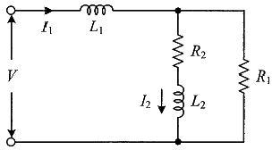
- R2/R1 = L2/L1
- R1R2 = L1L2
- R1R2 = ωL1L2
- R1R2 = ω2L1L2
(정답률: 33%)
76. 각 상의 전류가 ia = 30sinωt(A), ib = 30sin(ωt-90°)(A), ic = 30sin(ωt+90°)(A)일 때 영상분 전류(A)의 순시치는?
- 10sinωt
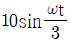
- 30sinωt
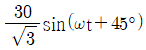
(정답률: 28%)
77. 어떤 전지에 연결된 외부 회로의 저항은 5Ω이고 전류는 8A가 흐른다. 외부 회로에 5Ω대신 15Ω의 저항을 접속하면 전류는 4A로 떨어진다. 이 전지의 내부 기전력은 몇 V인가?
- 15
- 20
- 50
- 80
(정답률: 30%)
78. r1(Ω)인 저항에 r(Ω)인 가변저항이 연결된 그림과 같은 회로에서 전류 I를 최소로 하기 위한 저항 r2(Ω)는? (단, r(Ω)은 가변저항의 최대 크기이다.)
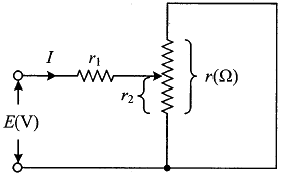
- r1/2
- r/2
- r1
- r
(정답률: 44%)
79. f(t) = sint + 2cost를 라플라스 변환하면?
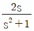
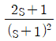
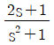
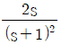
(정답률: 35%)
80. 파형율과 파고율이 모두 1인 파형은?
- 고조파
- 삼각파
- 구형파
- 사인파
(정답률: 51%)
5과목: 전기설비
81. 전력 보안통신 설비인 무선통신용 안테나를 지지하는 목주의 풍압하중에 대한 안전율은 얼마 이상으로 해야 하는가?
- 0.5
- 0.9
- 1.2
- 1.5
(정답률: 50%)
82. 고압전로 또는 특고압전로와 저압전로를 결합하는 변압기의 저압측의 중성점에는 제 몇 종 접지공사를 하여야 하는가?(관련 규정 개정전 문제로 여기서는 기존 정답인 2번을 누르면 정답 처리됩니다. 자세한 내용은 해설을 참고하세요.)
- 제1종 접지공사
- 제2종 접지공사
- 제3종 접지공사
- 특별 제3종 접지공사
(정답률: 29%)
83. 가공전선로의 지지물에 지선을 시설하려는 경우 이 지선의 최저 기준으로 옳은 것은?
- 허용인장하중 : 2.11kN, 소선지름 : 2.0mm, 안전율 : 3.0
- 허용인장하중 : 3.21kN, 소선지름 : 2.6mm, 안전율 : 1.5
- 허용인장하중 : 4.31kN, 소선지름 : 1.6mm, 안전율 : 2.0
- 허용인장하중 : 4.31kN, 소선지름 : 2.6mm, 안전율 : 2.5
(정답률: 49%)
84. 저압 가공전선과 고압 가공전선을 동일 지지물에 시설하는 경우 이격거리는 몇 cm 이상이어야 하는가? (단, 각도주(角度住)·분기주(分岐住) 등에서 혼촉(混觸)의 우려가 없도록 시설하는 경우는 제외한다.)
- 50
- 60
- 70
- 80
(정답률: 42%)
85. 교통신호등의 시설기준에 관한 내용으로 틀린 것은?
- 제어장치의 금속제 외함에는 제3종 접지공사를 한다.
- 교통신호등 회로의 사용전압은 300V 이하로 한다.
- 교통신호등 회로의 인하선은 지표상 2m 이상으로 시설한다.
- LED를 광원으로 사용하는 교통신호등의 설치는 KS C 7528 “LED 교통신호등”에 적합한 것을 사용한다.
(정답률: 47%)
86. 변압기에 의하여 특고압전로에 결합되는 고압전로에는 사용전압의 몇 배 이하인 전압이 가하여진 경우에 방전하는 장치를 그 변압기의 단자에 가까운 1극에 설치하여야 하는가?
- 3
- 4
- 5
- 6
(정답률: 49%)
87. 터널 안의 윗면, 교량의 아랫면 기타 이와 유사한 곳 또는 이에 인접하는 곳에 시설하는 경우 가공 직류 전차선의 레일면상의 높이는 몇 m 이상인가?
- 3
- 3.5
- 4
- 4.5
(정답률: 33%)
88. 의료장소 중 그룹 1 및 그룹 2의 의료 IT 계통에 시설되는 전기설비의 시설기준으로 틀린 것은?
- 의료용 절연변압기의 정격출력은 10kVA이하로 한다.
- 의료용 절연변압기의 2차측 정격변압은 교류 250V 이하로 한다.
- 전원측에 강화절연을 한 의료용 절연변압기를 설치하고 그 2차측 전로는 접지한다.
- 절연감시장치를 설치하되 절연저항이 50kΩ 까지 감소하면 표시설비 및 음향설비로 경보를 발하도록 한다.
(정답률: 36%)
89. 사람이 상시 통행하는 터널 안 배선의 시설기준으로 틀린 것은?
- 사용전압은 저압에 한한다.
- 전로에는 터널의 입구에 가까운 곳에 전용 개폐기를 시설한다.
- 애자사용 공사에 의하여 시설하고 이를 노면상 2m 이상의 높이에 시설한다.
- 공칭단면적 2.5mm2 연동선과 동등 이상의 세기 및 굵기의 절연전선을 사용한다.
(정답률: 42%)
90. 가공전선로의 지지물에는 취급자가 오르고 내리는데 사용하는 발판 볼트 등은 특별한 경우를 제외하고 지표상 몇 m 미만에는 시설하지 않아야 하는가?
- 1.5
- 1.8
- 2.0
- 2.2
(정답률: 55%)
91. 고압 가공전선이 교류 전차선과 교차하는 경우, 고압 가공전선으로 케이블을 사용하는 경우 이외에는 단면적 몇 mm2 이상의 경동연선(교류 전차선 등과 교차하는 부분을 포함하는 경간에 접속점이 없는 것에 한한다.)을 사용하여야 하는가?
- 14
- 22
- 30
- 38
(정답률: 33%)
92. 특고압 가공전선과 가공약전류 전선 사이에 보호망을 시설하는 경우 보호망을 구성하는 금속선 상호 간의 간격은 가로 및 세로를 각각 몇 m 이하로 시설하여야 하는가?
- 0.75
- 1.0
- 1.25
- 1.5
(정답률: 32%)
93. 1차측 3300V, 2차측 220V 인 변압기 전로의 절연내력 시험전압은 각각 몇 V에서 10분간 견디어야 하는가?
- 1차측 4950V, 2차측 500V
- 1차측 4500V, 2차측 400V
- 1차측 4125V, 2차측 500V
- 1차측 3300V, 2차측 400V
(정답률: 46%)
94. 직류식 전기철도에서 배류선의 상승 부분 중 지표상 몇 m 미만의 부분은 절연전선(옥외용 비닐 절연전선을 제외한다.) 캡타이어 케이블 또는 케이블을 사용하고 사람이 접촉할 우려가 없고 또한 손상을 받을 우려가 없도록 시설하여야 하는가?
- 1.5
- 2.0
- 2.5
- 3.0
(정답률: 22%)
95. 버스덕트 공사에 의한 저압의 옥측배선 또는 옥외배선의 사용전압이 400V 이상인 경우의 시설기준에 대한 설명으로 틀린 것은?
- 목조 외의 조영물(점검할 수 없는 은폐장소)에 시설할 것
- 버스덕트는 사람이 쉽게 접촉할 우려가 없도록 시설할 것
- 버스덕트는 KS C IEC 6⑤29(2006)에 의한 보호등급 IPX4에 적합할 것
- 버스덕트는 옥외용 버스덕트를 사용하여 덕트 안에 물이 스며들어 고이지 아니하도록 한 것일 것
(정답률: 43%)
96. 특고압 가공전선이 가공약전류 전선 등 저압 또는 고압의 가공전선이나 저압 또는 고압의 전차선과 제1차 접근상태로 시설되는 경우 60kV 이하 가공전선과 저고압 가공전선 등 또는 이들의 지지물이나 지주 사이의 이격거리는 몇 m 이상인가?
- 1.2
- 2
- 2.6
- 3.2
(정답률: 34%)
97. 옥내 고압용 이동전선의 시설기준에 적합하지 않은 것은?
- 전선은 고압용의 캡타이어케이블을 사용하였다.
- 전로에 지락이 생겼을 때에 자동적으로 전로를 차단하는 장치를 시설하였다.
- 이동전선과 전기사용기계기구와는 볼트 조임 기타의 방법에 의하여 견고하에 접속하였다.
- 이동전선에 전기를 공급하는 전로의 중성극에 전용 개폐기 및 과전류차단기를 시설하였다.
(정답률: 38%)
98. 중성선 다중접지식의 것으로서 전로에 지락이 생겼을 때 2초 이내에 자동적으로 이를 전로로부터 차단하는 장치가 되어 있는 22.9kV 특고압 가공전선이 다른 특고압 가공전선과 접근하는 경우 이격거리는 몇 m 이상으로 하여야 하는가? (단, 양쪽이 나전선인 경우이다.)
- 0.5
- 1.0
- 1.5
- 2.0
(정답률: 19%)
99. 고압 또는 특고압 가공전선과 금속제외 울타리가 교차하는 경우 교차점과 좌, 우로 몇 m 이내에 개소에 제1종 접지공사를 하여야 하는가? (단, 전선에 케이블을 사용하는 경우는 제외한다.)
- 25
- 35
- 45
- 55
(정답률: 23%)
100. 수상전선로의 시설기준으로 옳은 것은?
- 사용전압이 고압인 경우에는 클로로프렌 캡타이어 케이블을 사용한다.
- 수상전선로에 사용하는 부대(浮臺)는 쇠사슬 등으로 견고하게 연결한다.
- 고압 수상전선로에 지락이 생길 때를 대비하여 전로를 수동으로 차단하는 장치를 시설한다.
- 수상전선로의 전선은 부대의 아래에 지지하여 시설하고 또한 그 절연핍고을 손상하지 아니하도록 시설한다.
(정답률: 31%)